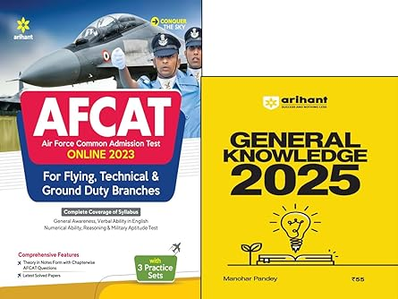
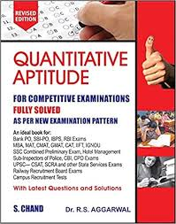
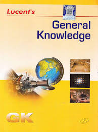

|
"The sky is not the limit, it's only the beginning. Ready to soar? 🛩️"
|
What is AFCAT?
Ever thought about serving your country while soaring in the skies? The
Air Force Common Admission Test (AFCAT)
is your golden ticket to join the Indian Air Force as an officer. It's an online examination conducted by the Indian Air Force, twice a year, to select talented individuals like you for officer positions.
Think of it as the gatekeeping exam—not just any exam, but the one that decides whether you get to wear that prestigious blue uniform and become part of India's aerial defense system.
Basic Information You Need to Know
When & Where Does AFCAT Happen?
The Indian Air Force conducts AFCAT twice a year—typically around February and September. The exam is conducted entirely online on the official portal afcat.cdac.in. You can sit comfortably at home and attempt it!
Officer Positions Available
AFCAT isn't one-size-fits-all. Based on your background and interests, you can apply for three branches:
- Flying Branch: Become a pilot and literally fly fighter jets. Cool, right?
- Ground Duty Technical: For engineers—work on aircraft systems, weapons, navigation, and more.
- Ground Duty Non-Tech: For graduates from any stream—logistics, administration, and strategic roles.
Age & Education Requirements
Flying Branch:
- Age: 20-24 years | Education: 12th pass with PCM + BE/B.Tech
Ground Duty Technical:
- Age: 20-27 years | Education: BE/B.Tech in relevant field
Ground Duty Non-Tech:
- Age: 20-28 years | Education: Any bachelor's degree
Who Can Apply?
Great news—both boys and girls can apply. The Indian Air Force welcomes talent regardless of gender. You just need to be an Indian citizen with valid qualifications.
How You Get Selected (The Merit Formula)
AFCAT isn't just about acing one test. Your final selection is based on a combination of factors:
- AFCAT Written Exam Score: Your performance in the main online test.
- Air Force SSB (Service Selection Board): A thorough evaluation of your personality, leadership, and decision-making abilities.
- Medical Fitness: Ensure you're physically fit according to Air Force standards.
- Final Merit List: All scores are compiled, and candidates ranked accordingly.
So basically, you need to excel in the written exam, impress the SSB panel, pass medical tests, and—boom—you're on your way to becoming an officer!
Your Career Awaits: Flying Officer & Beyond
Starting Rank
Once commissioned, you start as a Flying Officer—a designation that commands respect and responsibility. Not bad for a start, eh?
Promotion Ladder
Flying Officer → Flight Lieutenant → Squadron Leader → Wing Commander → Group Captain → Air Commodore → Air Vice Marshal → Air Marshal
Salary & Perks
As a Flying Officer, you can expect a basic pay of ₹56,100 to ₹1,77,500 (depending on seniority). On top of that:
- Flying Allowance: ₹25,000-₹50,000 (for pilots)
- Dearness Allowance & House Rent Allowance
- Free accommodation & medical facilities
- Pension & retirement benefits
- Annual leave & vacation benefits
What Will You Actually Do?
Flying Officers (Pilots): You'll fly combat and transport aircraft, defend Indian airspace, and undertake missions. Your office is literally a cockpit!
Technical Officers: You'll maintain and upgrade aircraft systems, work on weapons integration, navigation, and radar technology. Think of yourself as the brains behind the bird.
Non-Tech Officers: You'll handle logistics, strategic planning, human resources, and administration—keeping the entire force running smoothly.
AFCAT Syllabus: What You'll Study
General Awareness
Stay updated with current affairs, Indian history, geography, defense systems, world politics, and sports. Basically, be a news junkie!
English Language
Reading comprehension, vocabulary, grammar, and spotting errors. Think of it as polishing your communication skills.
Mathematics & Numerical Ability
Basic arithmetic, algebra, geometry, percentages, and data interpretation. Nothing too complex—high school math is your friend.
Reasoning & Military Aptitude
Logical reasoning, spatial visualization, decision-making under pressure, and military scenarios. This tests how you think like a soldier.
Engineering Knowledge Test (EKT) - For Tech Branch Only
- CS/IT Branch: Data structures, algorithms, networking, database management
- Electronics Branch: Circuit theory, digital electronics, microprocessors, communication systems
- Mechanical Branch: Thermodynamics, mechanics, fluid dynamics, manufacturing processes
Exam Pattern: What to Expect
✈ AFCAT Written Exam
| Subject |
Number of Questions |
Marks |
Duration |
| General Awareness | 30 | 30 | 2 Hours |
| English | 20 | 20 |
| Mathematics | 20 | 20 |
| Reasoning | 30 | 30 |
| Total | 100 | 100 | 2 Hours |
Note: There's a negative marking of 0.25 marks for each wrong answer. So think before you tick!
Engineering Knowledge Test (EKT)
If you're applying for the Technical branch, you'll face an additional EKT exam with 50 questions (50 marks) in 45 minutes. It tests your branch-specific engineering knowledge.
AFSB (Air Force Service Selection Board) Process
Cleared the written exam? Congratulations! Now comes the SSB round—think of it as an intensive personality and leadership assessment. Here's what happens:
- Day 1: Screening Phase
- OIR Test: A reasoning test that determines if you move forward.
- PPDT (Picture Perception & Discussion): You'll see a picture, write a story, and discuss with others. It's about your perspective and listening skills.
- Days 2-4: Full SSB Board (for selected candidates)
- Psychological Tests: Questionnaires and tests to assess your personality, decision-making, and attitude.
- GTO Tasks: Group exercises where you solve problems collectively. Can you be a team player and leader?
- Personal Interview: A one-on-one chat with SSB officers. Be honest, confident, and prepared to defend your choices.
- Conference: Final review where officers confirm your suitability for the Air Force.
Officer Training: The Air Force Academy
Where & How Long?
All commissioned officers undergo training at the Air Force Academy, Dundigal (Hyderabad). The training duration is approximately 24-28 months (depending on your branch).
What Training Includes
- Flying Training: For pilots—basic flying, formation flying, advanced combat techniques.
- Academic Courses: Military strategy, leadership, air operations, and technical subjects.
- Physical Fitness: Rigorous PT, survival training, and tactical exercises.
- Discipline & Values: Inculcating military values—integrity, courage, and national pride.
- Sports & Recreation: Basketball, cricket, swimming, adventure sports to build team spirit.
By the end, you're not just a trained officer—you're a proud guardian of Indian skies!
Study Resources: Your Preparation Arsenal
Recommended Books
- Arihant AFCAT Guide – Comprehensive coverage with practice tests

- RS Aggarwal's Quantitative Aptitude – Math problems explained clearly

|
- Word Power Made Easy by Norman Lewis – Vocabulary building
- Lucent's General Knowledge – For GA preparation

|
Official Websites
YouTube Channels (Free Learning!)
Coaching Centres: If You Need Expert Guidance
Chandigarh
- Chandigarh Academy(Call US) – Known for structured AFCAT programs and high success rates
- IBT Institute(Call US) – Specializes in defence exams with experienced trainers
- Olive Greens(Call US) – Exclusive focus on AFSB interview prep and personality development
Pro Tip: While coaching helps, self-study and dedication are equally (if not more) important. Many successful AFCAT candidates have cleared it through self-preparation!
|
"All it takes is consistency and courage to wear the blue uniform. The skies are waiting for you—make them yours! 🇮🇳"
|
|